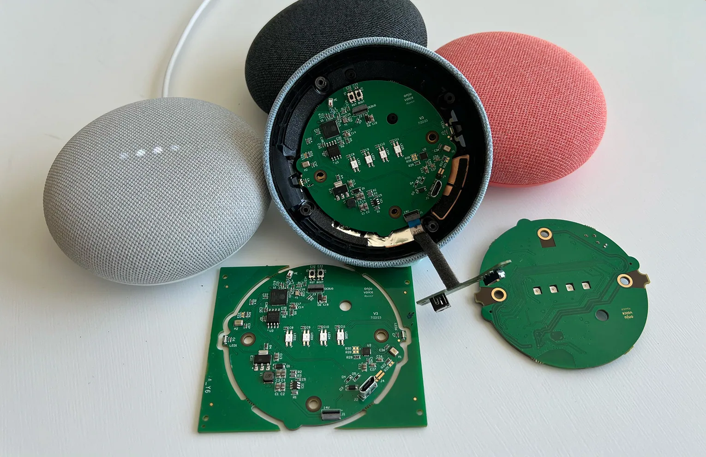

Onju Voice
用 ESP32-S3 定制主板替换 Nest Mini 主板，复用外壳与扬声器。
- 语音助手
Google Nest Mini 第二代外壳与外围部件
这是换板改造，不是对原 Google 固件的软件越狱。

这是一条 具体改造路线 · 最近核对公开资料 2026-10-20
从闲置到能用，它改变了什么
原来卡在哪里
Google Nest Mini 的原厂主板与服务限制了自定义语音链路。
改完能做什么
保留外壳和部分声学部件，换入 ESP32-S3 定制主板，连接外部语音与模型服务。
作者 2023 年 X 原帖及后续说明确认了换板路线。原帖展示的是语音代理场景，不是让 Nest Mini 自身运行大模型。原版已宣布停止维护，应把它作为硬件复用案例阅读。Onju v2 是同一项目家族的后续设计，旧视频不能自动证明 v2 的每个功能。
适合你，如果
愿意购买或制作 PCB、拆装设备并维护外部语音服务的人。
先别选，如果
期待下载一个程序便完成原机越狱，或要求所有推理都在音箱内部的人。
做完以后这样检查
- 核对 Nest Mini 代际、PCB 版本和部件清单
- 分开验证拾音、扬声器、网络与服务端
- 测试完整对话和断网后的行为；保留原主板
这是给你的验收清单；KitAgain 目前还没有亲手完成这些硬件测试。
你要准备什么
- 怎么改
- 替换主板
- 上手难度
- 高难度
- 拆机
- 需要
- 焊接
- 依组装方案
- 云 API / 服务
- 可选
- 成本金额
- 待核价 / UNKNOWN
还可能要花的钱
- Onju PCBA
- 拆装工具
- 主机
- 可选云语音/API
这些价格还没有核实。软件开源，也可能仍要买转接件、主板、存储，或承担电费和服务费。
最坏会怎样，怎么退回来
数据丢失风险: 可能发生; 刷坏或无法启动的风险: 可能发生. 这是按操作路线给出的提醒，还没有在每台设备上实测。
保留原主板可提供硬件回退选项；拆装损伤不可由软件恢复。
先收藏恢复资料（无已核验链接）
这条信息现在可信到哪一步
E2 · 作者实机陈述 / 演示
作者提供 PCB、固件及服务器安装说明；README 声明不再积极维护，后继为 onju-v2。独立制作者视频说明确认其进行了改装演示，但本轮未播放视频，未升级为独立实测等级。 已浏览作者 X 原帖正文、换板解释和视频组件；未逐帧核验视频。
KitAgain 目前没有亲手测试这台设备，也没有把别人的成功截图当成我们的复现。
- 维护状态
- 作者宣布停维护
- GitHub 最后 push
- 2026-04-13T06:53:08Z
- 仓库许可证
- MIT
未归档或近期 push 不能证明型号无故障；镜像迁移也不等于停止维护。
根许可证或 README 声明不代表固件、模型、品牌和第三方组件均采用相同许可。
项目账号与已核实作者主页
- justLV · GitHub ↗ — 源码仓库所有者账号；不据此推断其为唯一作者
- Justin Alvey / justLV · X ↗ — Onju Voice 作者；账号归属由项目原帖与仓库交叉确认
仓库所有者账号用于追溯项目来源；作者社交账号只有在项目资料、仓库或作者主页能确认归属时才收录。
这些链接分别能帮你做什么
- 上游项目文档 ↗2026-10-20
先用它了解项目能做什么、怎样开始，以及作者写明的限制。
https://github.com/justLV/onju-voice/blob/master/README.md 适合补看作者当时展示的设备和过程；本目录已读正文，但没有把视频画面当成已核验结果。
https://x.com/justLV/status/1681377298308820992
原始页面可能使用中文或英文。准备动手时，再按你的准确型号、固件和地区版本核对一次。